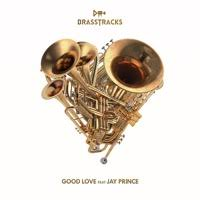
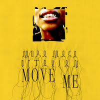
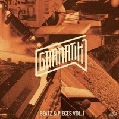

Hi, I am Avalon

Dutchie who lived in many countries before settling in her beloved Barcelona. Passionate about culture, education and music.
Spread kindness around like confettiFavourite producers
|  | BrasstracksThis young New York duo, Ivan Jackson (playing the trumpet) and Conor Rayne (playing the drums), create brass-driven funk'n'soul for hip-hop heads and jazzers alike. They brought big band music to the electronic world. |
|  | MuraMasaAlex Crossan, also knows by the stage name Mura Masa, is a Guernsey-born electronic music Grammy award winning producer, songwriter and multi-instrumentalist. The reason he is one of my favourites is that his albums are a mix of multiple genres, all coming together at once. |
|  | GramatikDenis Jašarević, known by his stage name Gramatik, is a electronic music producer from Slovenia that plays nearly every instrument there is. He started producing music at the age of 13 and is the master of combining instrumental music with electronic tunes. |
My journey at Le Wagon
I started working at Le Wagon Barcelona more than a year ago, fostering the community of students and alumni. Being surrounded by code, tech and driven people, I was inspired to take the plunge myself and get the skills of the future. I strive to bring more equality to the tech community and pass on what I've learned to others.